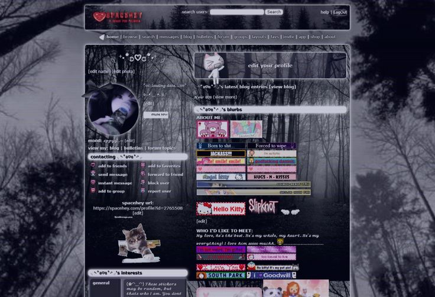
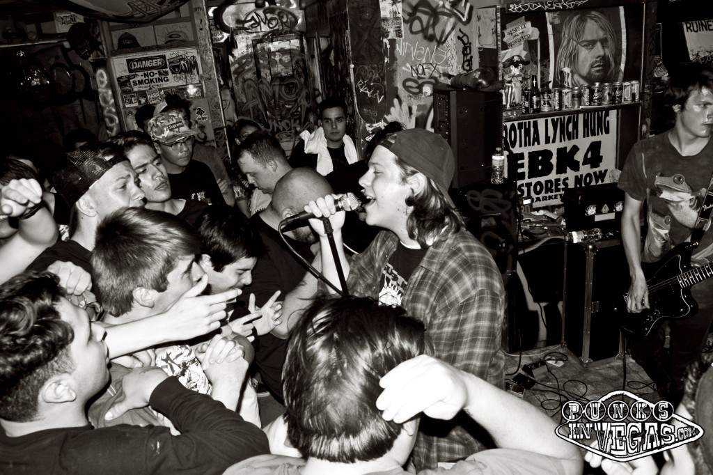
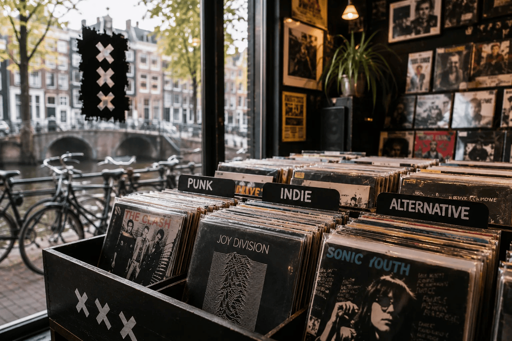
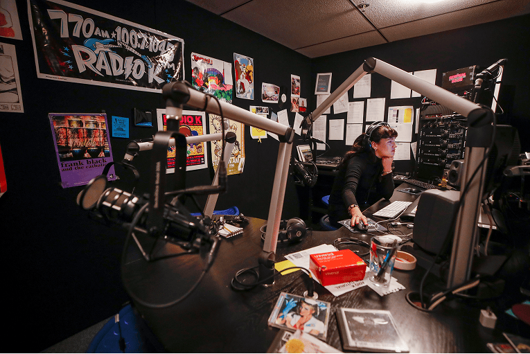
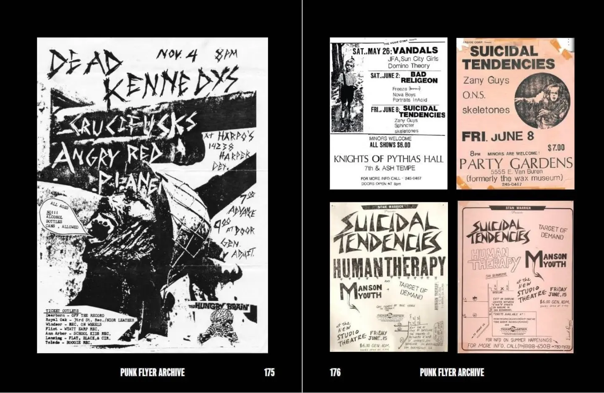
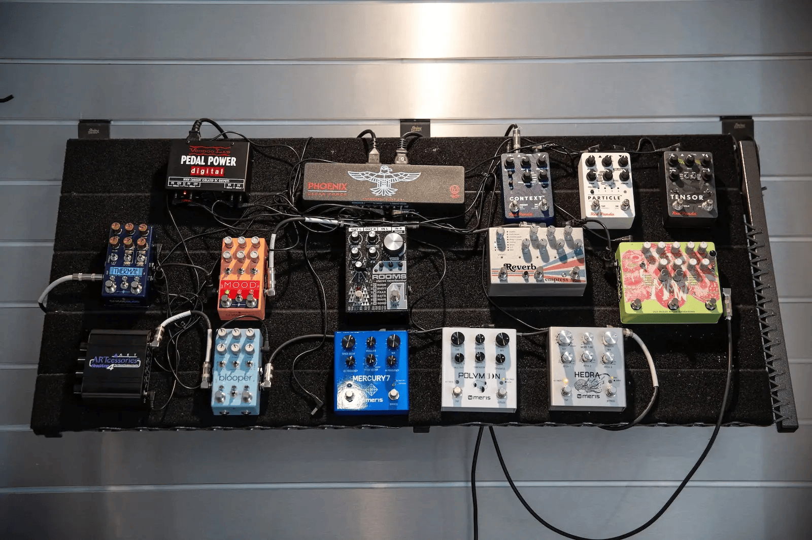
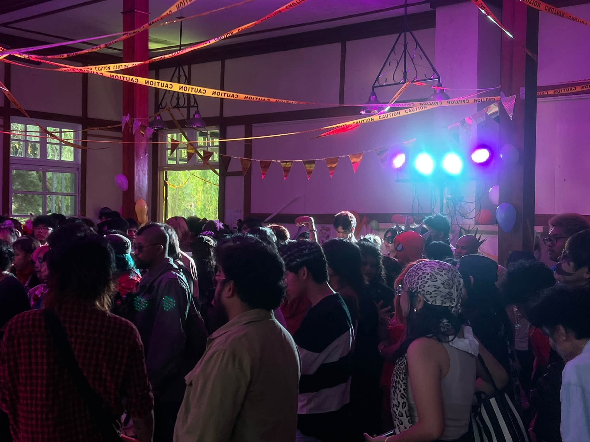
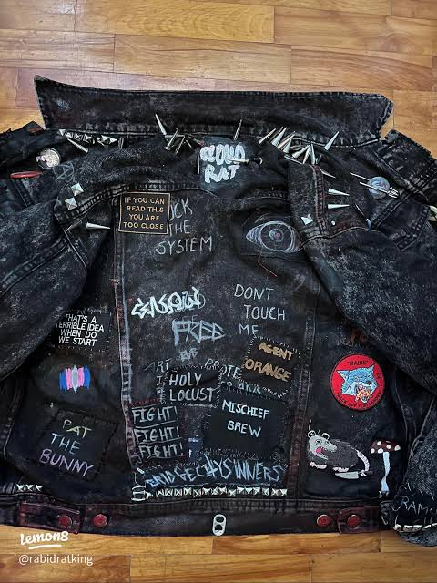
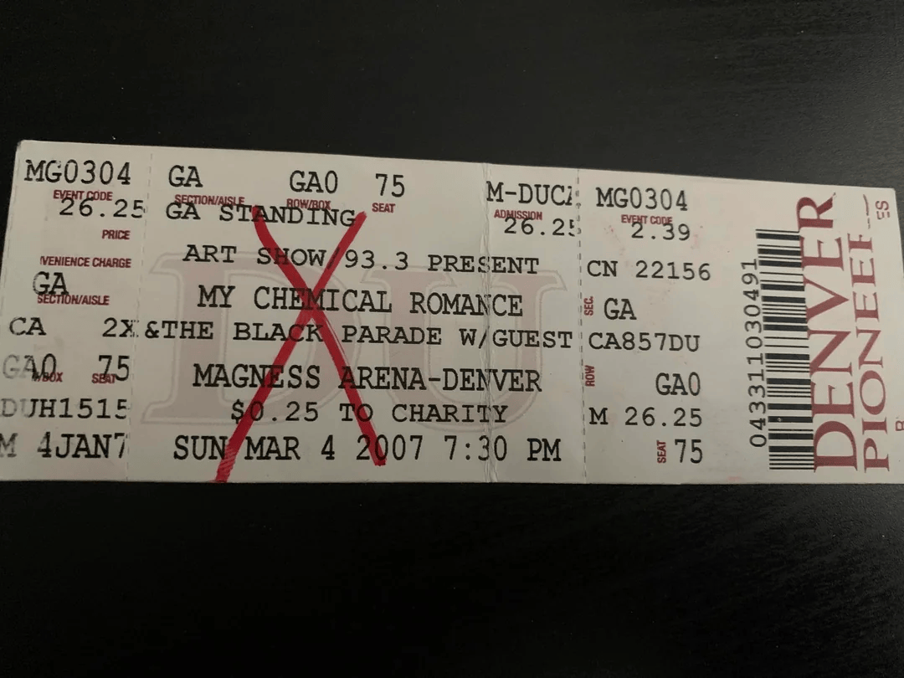
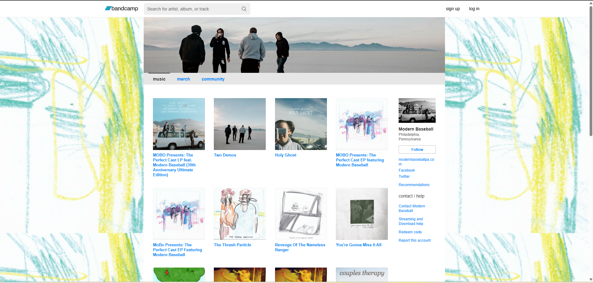

Welcome to STATIC
STATIC is a home for people who love alternative music. Browse albums by genre, see what other listeners are playing, and build a profile that looks like you. Pull up a chair, start with the clip below, then dig into the sections underneath.
What this site is built to do
- Semantic, accessible markup: every page uses real landmarks, a skip link, and labelled controls so it works with a keyboard and a screen reader.
- Token-driven, responsive CSS: every color and space comes from one set of variables, and the layout holds from small phones to wide desktop screens.
- Lightweight, vanilla JavaScript: the search filter, the featured carousel, and the live form checks all run without any libraries.
About STATIC
STATIC is a platform where people can discover alternative music, explore different genres, and express themselves through their own profiles. Users can browse music releases, visit other people's profiles, see what they are listening to, and interact with others who share similar interests.
This project is inspired by early-2000s internet culture, DIY music communities, and independent music platforms.


What does "alternative" actually mean?
Alternative, often shortened to "alt," is a broad term used to describe music that falls outside the usual mainstream styles. It became more widely associated with independent artists, underground music, and college radio during the 1980s and 1990s.
Over time, alternative music developed into many different genres and subcultures, including emo, shoegaze, grunge, punk, nu-metal, screamo, and more. These genres may sound very different from one another, but many share similar ideas of creative freedom, self-expression, and independence.
It's also important to understand that alternative music doesn't have one specific sound or definition. It continues to change as new artists and communities develop their own styles.


Where did it come from?
Late 1970s: Punk rock gained popularity in the United States and the United Kingdom. Bands such as the Ramones, Sex Pistols, and The Clash helped establish a culture built around independence, self-expression, and making music without following traditional industry standards.
Early 1980s: Punk developed into different styles, including post-punk and hardcore punk. Bands such as Joy Division, The Cure, Black Flag, and Minor Threat helped shape these movements. During this period, early emo also began developing through bands such as Rites of Spring in Washington, D.C.
Late 1980s to early 1990s: Shoegaze emerged in the United Kingdom, with bands such as My Bloody Valentine and Slowdive becoming important figures in the genre. Meanwhile, grunge grew in popularity in Seattle, eventually reaching a much wider audience through bands such as Nirvana. Other heavy alternative styles also developed, including nu-metal, which later became popular through bands such as Korn and Deftones.
2000s: Alternative music became more visible in mainstream culture. Emo and scene culture gained popularity through bands such as My Chemical Romance, Paramore, and Fall Out Boy. At the same time, underground communities continued developing their own sounds, styles, and identities through online platforms such as MySpace.
2010s to present: Alternative music continued to develop through online communities and independent music platforms. Genres such as Midwest emo and shoegaze gained renewed attention, while newer artists continued experimenting with different sounds. Platforms such as Bandcamp and social media also made it easier for independent musicians to share their work and reach new listeners.


The Philippine scene
Alternative music also has a long history in the Philippines. Local underground communities have developed their own versions of punk, hardcore, shoegaze, emo, and other alternative genres over the years.
The Philippine punk scene can be traced back to the early 1980s, when local bands began organizing shows and releasing music independently. Events such as Brave New World in 1981 and DIY labels such as Twisted Red Cross helped support local underground musicians.
During the following decades, other genres and communities continued to grow. Shoegaze bands such as Sonnet LVIII and Sugar Hiccup helped introduce the sound to local audiences, while Filipino emo bands also gained attention during the 2000s.
Today, Filipino alternative music continues to exist through independent artists, local gigs, online communities, and smaller music labels. Artists such as Megumi Acorda and Bita and the Botflies represent some of the different sounds found within the local alternative music scene.


Some subcultures you might run into
These are some of the genres and subcultures you might encounter while exploring alternative music. Some of them share similar influences, so it's not unusual for artists to fall under more than one category.
- Emo — A genre known for its emotional lyrics, expressive vocals, and guitar-driven sound. It has developed into different styles over the years, including early emo, Midwest emo, and its more mainstream forms during the 2000s.
- Scene — A subculture that became popular during the mid-2000s, especially through MySpace. It is commonly associated with colorful clothing, distinctive hairstyles, heavy eyeliner, and alternative music.
- Shoegaze — A genre known for its layered guitars, heavy use of effects, distorted sounds, and often distant vocals.
- Nu-metal — A heavier style of alternative metal that combines metal with influences from hip-hop, industrial music, and other genres. Examples include Korn, Deftones, and Limp Bizkit.
- Punk — A genre and subculture built around independence, self-expression, and challenging traditional expectations. It also influenced many of the genres that followed.
- Goth / Post-punk — Music and subcultures often associated with darker sounds, atmospheric instrumentals, and distinctive fashion. Examples include Bauhaus, Joy Division, and The Cure.
- Grunge — A style of alternative rock that became popular during the early 1990s, known for its distorted guitars, rough sound, and influences from punk and heavy metal.


New to this? Start here.
Getting into alternative music doesn't require following a certain fashion style, listening to specific bands, or knowing everything about the different genres. It's mostly about exploring music, finding what you enjoy, and learning more about the communities surrounding it.
Listening: Start by exploring different genres and artists. You can try listening to a few albums from each genre to get a better idea of their sounds. Don't feel pressured to like everything you discover. Music is personal, so listen to what you genuinely enjoy.
Shows: If you get the chance, try attending local gigs and independent music events. These are good opportunities to discover smaller artists and meet people with similar interests. Remember to respect the performers, the venue, and the people around you.
Online: Follow independent artists, music labels, and local bands through platforms such as Bandcamp and Instagram. You can also participate in music communities, share recommendations, and discover artists through other listeners.
Don't gatekeep. Alternative music has always had different communities and styles. There's no need to judge someone for being new to a genre or enjoying more mainstream artists. Everyone starts somewhere, and discovering new music should be something people can enjoy without feeling excluded.


Why STATIC exists
Most music streaming platforms focus on helping users discover and listen to more music through recommendations and personalized feeds. While these features are useful, they don't always provide much room for personal expression or interaction with other listeners.
STATIC aims to provide a different experience by combining music discovery with customizable profiles and community features. Instead of simply showing what someone listens to, users can create profiles that reflect their musical interests, share their favorite releases, and interact with others who enjoy similar music.
The goal is to create a space where people can discover music, express themselves, and connect with others through their shared interests.
Welcome to STATIC. Make yourself at home.